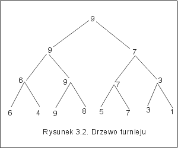

| « poprzedni punkt | nastêpny punkt » |
Byæ mo¿e, ogl±daj±c pucharowe rozgrywki sportowe, zastanawiacie siê Pañstwo, jak to jest, ¿e miejsce drugie zajmuj± czêsto dru¿yny, które wcale nie s± najlepsze. Dosz³y do fina³u i przegra³y z mistrzem, ale tak naprawdê reprezentuj± du¿o gorszy poziom od zwyciêzcy i inne dru¿yny wydaj± siê byæ du¿o lepsze. To nie wydaje siê wrêcz sprawiedliwe! Jak znale¼æ dru¿ynê, która jest obiektywnie najlepsza ze wszystkich, po pominiêciu zwyciêzcy?
Sformalizujemy problem w nastêpuj±cy sposób: dany jest ci±g n elementów e[1],..., e[n] pewnej liniowo uporz±dkowanej struktury danych. Znale¼æ drugi co do wielko¶ci element tego ci±gu, tzn. znale¼æ element najwiêkszy w zbiorze {e[1],...,e[n]}\max{e[1], ..., e[n]}. Za³o¿ymy, ¿e elementy w ci±gu nie powtarzaj± siê, i ¿e ci±g posiada co najmniej dwa elementy. Jak zwykle wynik algorytmu zapiszemy na zmiennej result. Przyjmijmy nastêpuj±c± specyfikacjê:
wp = {e[i] ¹ e[j] dla i¹j, n>0},
wk = { result= e[i] dla pewnego i < n+1, e[j] < result < e[i0] dla pewnego i0 i dla wszystkich j ¹ i0}.
Pierwsza czê¶æ warunku koñcowego, mówi, ¿e warto¶æ zmiennej result jest elementem danego ci±gu, a druga czê¶æ, ¿e tylko jeden element ci±gu jest od result wiêkszy. Algorytm naiwny, wynikaj±cy z samego sformu³owania zadania jest nastêpuj±cy:
1. Znajd¼ element najwiêkszy stosuj±c algorytm max.
2. Pomiñ w dalszych rozwa¿aniach element najwiêkszy.
3. W¶ród pozosta³ych elementów, znajd¼ element najwiêkszy stosuj±c ponownie algorytm max.
Algorytm znajduj±cy maksimum, max, jest, jak wiadomo, algorytmem optymalnym i wykonuje n-1 porównañ dla znalezienia elementu najwiêkszego (por. wyk³ad I, p.4). Usuniêcie elementu maksymalnego mo¿e polegaæ na zamianie pozycji pierwszego i maksymalnego elementu. Koszt tej operacji jest sta³y. Punkt trzeci algorytmu, mo¿na zrealizowaæ szukaj±c elementu najwiêkszego w ci±gu e[2],...,e[n], co wymaga n-2 porównañ. Razem koszt algorytmu naiwnego wynosi 2n-3.
Zastanówmy siê jednak, czy to drugie wyszukiwanie elementu najwiêkszego nie mog³oby byæ zast±pione czym¶ innym. Czy przegl±daj±c ci±g w poszukiwaniu elementu najwiêkszego, nie mogliby¶my wykonaæ czê¶ci pracy potrzebnej do znalezienia elementu drugiego najwiêkszego?
Przypatrzmy siê jeszcze raz turniejowi rozgrywanemu przez, powiedzmy, n dru¿yn systemem pucharowym. W ka¿dym etapie turnieju dru¿yny graj± parami. Dobór w pary mo¿e byæ losowy. Do nastêpnego etapu przechodz± tylko te dru¿yny, które wygrywaj± pojedynki. Oczywi¶cie, po skoñczonej liczbie rund turniej koñczy siê wybraniem najlepszej dru¿yny.
Pytanie 6: Ile rund trzeba wykonaæ, aby wybraæ najlepsz± dru¿ynê, je¿eli na pocz±tku startowa³y 32 dru¿yny?
Ogólnie, je¿eli startowa³o 2n dru¿yn, to liczba rund wynosi n. A ile dok³adnie meczów musia³o zostaæ w tym przypadku rozegranych?
Wróæmy jednak do problemu bardziej abstrakcyjnego, sformu³owanego w specyfikacji powy¿ej. Ka¿dej dru¿ynie odpowiada teraz jeden element ci±gu, a si³a dru¿yny jest wyra¿ona przez warto¶æ przypisan± temu elementowi. "Mecz" polega na porównaniu dwóch elementów zgodnie z pewn±, obwi±zuj±c± w przyjêtej strukturze danych, relacj± porz±dku liniowego £. "Zwyciê¿a" i przechodzi do nastêpnej rundy element o wiêkszej warto¶ci. Oczywi¶cie element, który wygra³ w ostatniej rundzie nie przegra³ ani jednego "meczu" - jest to rzeczywi¶cie element najwiêkszy.
Przyk³ad 5.1 Niech elementami ci±gu bêd± liczby naturalne 6, 4 ,9, 8, 5, 7, 3, 1. Przedstawmy w postaci grafu kolejne etapy wyszukiwania elementu najwiêkszego opisan± metod±, por. Rysunek 3.2.

Wêz³ami w drzewie turnieju s± warto¶ci elementów ci±gu. Kolejne rundy turnieju odpowiadaj± poziomom w tym drzewie. W korzeniu drzewa znajduje siê element najwiêkszy. A gdzie znajduje siê element drugi co co wielko¶ci? Nie jest to bynajmniej wierzcho³ek na na poziomie 1, bo porównywali¶my tu dziewi±tkê z siódemk±, a przecie¿ 8 jest wiêksze ni¿ 7. £atwo zauwa¿yæ, ¿e musia³ byæ taki moment, ¿e element najwiêkszy by³ porównywany z elementem drugim co do wielko¶ci. W rozwa¿anym przyk³adzie sta³o siê tak ju¿ na pocz±tku turnieju, ale mog³o siê tak staæ w dowolnej z rund. Zatem, gdzie szukaæ drugiego co do wielko¶ci elementu? W¶ród elementów, które przegra³y z elementem najwiêkszym.
Obserwacja z przyk³adu 5.1 jest dostatecznie ogólna, by¶my mogli zaprojektowaæ algorytm rozwi±zywania naszego problemu. Zapiszemy go nieformalnie, implementacjê przedstawionej tu metody omówimy pó¼niej w wyk³adzie szóstym.
Algorytm turniej (szkic):
Zauwa¿my najpierw, ¿e koszt tego algorytmu jest du¿o mniejszy ni¿ algorytmu naiwnego. Znalezienie elementu najwiêkszego wi±¿e siê z wykonaniem n-1 porównañ niezale¿nie od tego, czy liczba n jest, czy nie jest potêg± dwójki. Elementy, które nie mia³y pary, przechodz± do nastêpnego etapu, bez wykonywania porównañ. Liczba rund turnieju wynosi élg nù, bo jest to wysoko¶æ drzewa binarnego o n li¶ciach, por. wyk³ad II, p.5. Zatem ci±g, który musimy ponownie przeszukaæ sk³ada siê z élg nù elementów. Ostatecznie liczba wykonanych porównañ wynosi n-1 + élg nù-1,
T(Turniej, n) = n + élg nù-2 .
Ca³a trudno¶æ w implementacji tego algorytmu polega za sposobie znalezienia elementów, które przegra³y ze zwyciêzc±, tak by nie wykonywaæ ¿adnych dodatkowych porównañ elementów. Poniewa¿ buduj±c drzewo turnieju nie wiemy, który element zwyciê¿y, zatem dla ka¿dego wygrywaj±cego trzeba pamiêtaæ listê elementów, które z nim przegra³y. Implementacjê wykorzystuj±c± strukturê list i strukturê stosów omówimy w rozdziale szóstym.
Pytanie 7: Ile dok³adnie porównañ wykona algorytm Turniej dla ci±gu dziewiêcioelementowego, je¿eli za³o¿ymy, ¿e element, który nie ma pary automatycznie przechodzi do nastêpnej rundy?
| « poprzedni punkt | nastêpny punkt » |